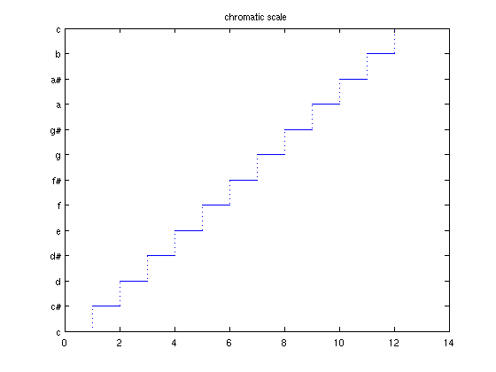
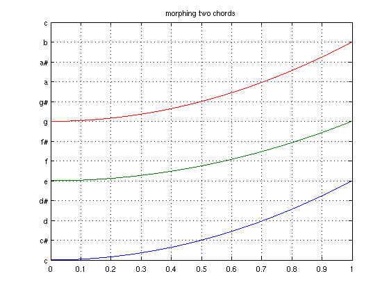
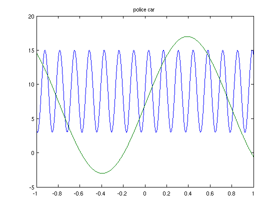

Can one hear the shape of a chebfun?
Stefan Güttel, 9th November 2011
(Chebfun example fun/AudibleChebfuns.m)
NOTE: THIS EXAMPLE PRODUCES NOISE (provided your sound card is properly configured). CHEBTUNE.M is available in the latest Chebfun development release, or here [1]. You can find .wav files of the audio output produced in this Example here [2].
The CHEBTUNE function listed below can turn your chebfuns into melodies. It works as follows: The chebfun is sampled at sufficiently many equispaced points on its domain, and then according to the real part of these samples the pitch of the melody is varied. The function value 0 is associated with the tone c'' and the integers below and above correspond to the semi-tones. A second argument of CHEBTUNE adjusts the duration of the melody.
Here is a chromatic tone progression over one octave, played for a duration of 6 seconds:
x = chebfun('x',[0,13]); y = floor(x); plot(y) set(gca,'YTick',0:12,'YTickLabel',... {'c','c#','d','d#','e','f','f#','g','g#','a','a#','b','c'}) title('chromatic scale') chebtune(y,6);
Note that CHEBTUNE is different from the SOUND function in that it does not interpret the chebfun as a waveform, but as a melody. CHEBTUNE can also play chords when a quasi-matrix argument is provided. Here is a C major chord being continuously shifted to an E minor chord:
x = chebfun('x',[0,1]); Y = [ 0 + 4*x.^2 , 4 + 3*x.^2 , 7+4*x.^2 ]; plot(Y); grid on set(gca,'YTick',0:12,'YTickLabel',... {'c','c#','d','d#','e','f','f#','g','g#','a','a#','b','c'}) title('morphing two chords') chebtune(Y,4)
Here is the sound of a whistle. Note that we have added some high-frequency oscillation to make the result sound less like a pure sine wave.
x = chebfun('x',[0,1.3]); y = min(6*cos(3*(x-.1)) + 1*(1-x).^-1,12); y = y + 0.3*sin(1000*x); y(domain([0,.3])) = NaN; y(domain([1,1.3])) = NaN; plot(y) title('whistle sound') chebtune(y,1)

Did you know that the sound of a police car can be described by a quasi-matrix with two columns?
x = chebfun('x'); Y = [9+6*sin(46*x),7+10*sin(4*x)]; plot(Y) title('police car') chebtune(Y,5);
We wonder if CHEBTUNE could be any useful for vision impaired users of Chebfun. A person with a trained ear you should be able to tell roughly the shape of a function by just listening. And with the reference tone c'' one could also hear the number of roots of this function:
x = chebfun('x');
y = 4*cos(x.^2) - 6*sin(3*x).^2;
Y = [ y , 0*y ];
chebtune(Y,4)
References:
[1] https://svn.maths.ox.ac.uk/trac/chebfun/browser/trunk/%40chebfun/chebtune.m